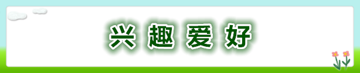
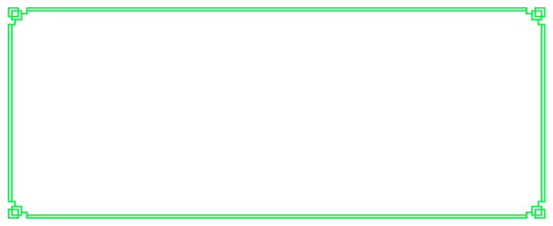

兴趣爱好广泛，喜欢各种球类。羽毛球是我的最爱也是最擅长的运动，经常会早起一个人去光谷体育馆与老师们、学长们以及厉害的大叔们一起切磋球技。个人拥有四只球拍，打坏的球更是不计其数。网球、排球、乒乓球技术水平也还可以，希望身边多些能一起打球的小伙伴。夏季时候我会带动班里同学去游泳馆，学校附近的游泳馆基本都去过，游泳也是一项能让人沉迷的健身运动。近期在练习桌球，也许球类之间是互通的吧，桌球球技提升得也比较快。当然，和大部分男生一样，我也喜欢打游戏。推荐大家多多进行体育运动锻炼身体，毕竟身体是革命的本钱。